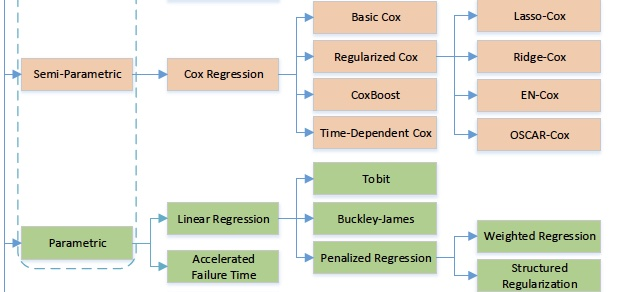
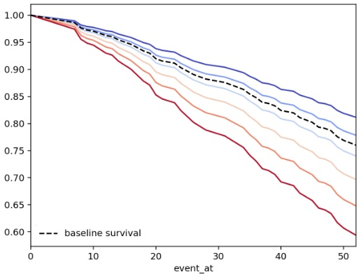
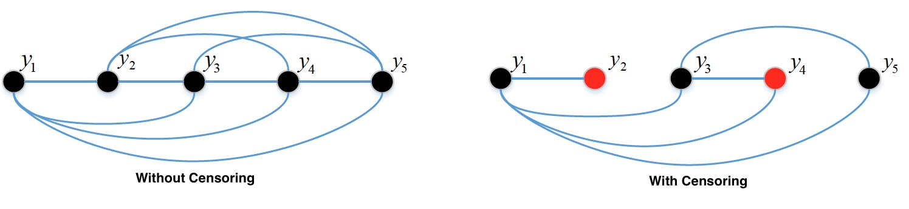
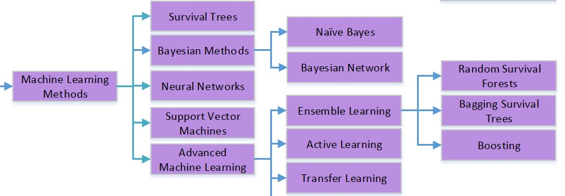

Predictive Survival Analysis#
This type of analytics answer the question “what will happened?”
Survival Regression#
Whenever we have additional variables next to duration & event, we can use survival regression.
Taxonomy of Statistical Methods#

Taxonomy of predictive statistical survival methods. ML for Survival Analysis: A Survey [2018]
Among the many methods available, Cox proportional hazard (CPH) and accelerated failure models are popular with many implementation. These methods model hazard rate \(h(t, x)\), as a function of time \(t\) and covariate \(x\)
CHP Model#
Traditional models, e.g., line linear regression, can not be used due to censoring. CPH model is based on the idea that log of the hazard is a linear function of covariates
where \(x\) and \(\beta\) are variable and regression coefficient vectors, respectively, and \(h_0(t)\) is a base-line hazard function (semi-parametric & non-negative).
Attention: The only time-varying component in CPH model is the base-line hazard \(h_0(t)\), where individual covariates would only scale this function with the time-invariant factor \(e^{\beta ^{\top} x}\)
PH Assumption#
The Proportional Hazards assumption means that the hazard ratio of two sample is constant over time (time-invariant),
In below figure, we see the survival function given different values of the covariate \(x\)
All the survival curves are a scaling of the base-line hazard
Given PH assumption, any two arbitrary survival curve has a time-invariant hazard rate

Survival function vs time, given different covariates. Courtesy of ifelines.readthedocs.io
Crossing of the survival/hazard curves for two or more categories of a predictor of interest, signal that the PH assumption is not met. However, it is possible that the functions do not cross and the PH assumption is not met. Thus, other approaches are needed to check PH assumption than curves crossing in a graph.
Note
Checking cox proportional hazard assumption is not important for predictive analytics, while the situation is different in prescriptive analytics.
In prediction the objective is to maximize an accuracy metric, and not to learn about how individual feature contribute to the model making that prediction.
In prescriptive analytics, the focus is on inference & correlation and to understand the influence of individual variables on the survival duration & event.
Dataset#
The data is related to 432 convicts who were released from Maryland state prisons in the 1970s and who were followed up for one year after release. Half the released convicts were assigned at random to an experimental treatment in which they were given financial aid; half did not receive aid [RBL13]. Below, there is a sneak peek at the features distributions of this experimental dataset.
fin: whether the inmate received financial aid after release.
prio: The number of convictions an inmate had prior to incarceration.
mar: whether the inmate was married at the time of release or not
wexp: whether the inmate had full-time work experience before incarceration or not.
paro: whether the inmate was released on parole or not.
import matplotlib.pyplot as plt
import seaborn as sns
from lifelines.datasets import load_rossi
df = load_rossi()
fig, ax = plt.subplots(2, 3, figsize=(12, 8))
cols = df.columns.drop(['fin','week', 'arrest'])
axes = ax.ravel()
for id, col in enumerate(cols):
_ax = axes[id]
bins = [17, 22, 27, 32, 37, 44] if col == 'age' else 'auto'
sns.histplot(data=df, x=col, hue='fin', alpha=0.5, bins=bins, ax=_ax)
_ax.set_xlabel(col)
Fitting CPH#
from lifelines import CoxPHFitter
cph = CoxPHFitter()
cph.fit(df, duration_col='week', event_col='arrest')
cph.print_summary()
| model | lifelines.CoxPHFitter |
|---|---|
| duration col | 'week' |
| event col | 'arrest' |
| baseline estimation | breslow |
| number of observations | 432 |
| number of events observed | 114 |
| partial log-likelihood | -658.75 |
| time fit was run | 2025-04-11 19:17:17 UTC |
| coef | exp(coef) | se(coef) | coef lower 95% | coef upper 95% | exp(coef) lower 95% | exp(coef) upper 95% | cmp to | z | p | -log2(p) | |
|---|---|---|---|---|---|---|---|---|---|---|---|
| fin | -0.38 | 0.68 | 0.19 | -0.75 | -0.00 | 0.47 | 1.00 | 0.00 | -1.98 | 0.05 | 4.40 |
| age | -0.06 | 0.94 | 0.02 | -0.10 | -0.01 | 0.90 | 0.99 | 0.00 | -2.61 | 0.01 | 6.79 |
| race | 0.31 | 1.37 | 0.31 | -0.29 | 0.92 | 0.75 | 2.50 | 0.00 | 1.02 | 0.31 | 1.70 |
| wexp | -0.15 | 0.86 | 0.21 | -0.57 | 0.27 | 0.57 | 1.30 | 0.00 | -0.71 | 0.48 | 1.06 |
| mar | -0.43 | 0.65 | 0.38 | -1.18 | 0.31 | 0.31 | 1.37 | 0.00 | -1.14 | 0.26 | 1.97 |
| paro | -0.08 | 0.92 | 0.20 | -0.47 | 0.30 | 0.63 | 1.35 | 0.00 | -0.43 | 0.66 | 0.59 |
| prio | 0.09 | 1.10 | 0.03 | 0.04 | 0.15 | 1.04 | 1.16 | 0.00 | 3.19 | <0.005 | 9.48 |
| Concordance | 0.64 |
|---|---|
| Partial AIC | 1331.50 |
| log-likelihood ratio test | 33.27 on 7 df |
| -log2(p) of ll-ratio test | 15.37 |
Interpretation#
Metrics#
partial log-likelihood is the cost function
breslow estimator is used to estimate \(\hat H_0\). Then the baseline survival function can be calculated as \(S_0(t) = e^{-H_0(t)}\)
Concordance will be elaborated in evaluation section
Scores#
Let’s consider fin variable (whether subject provided with financial aid after release), a one unit increase in fin means the base-line hazard will decrease by \(e^{-0.37} = 0.69\), why?
Since the hazard ratio (vs base-line) is \(0.69\) (< 1), we can argue financial aid reduces the risk of subjects getting re-arrested by 31%.
Along the same line of reasoning, whether the subject had prior arrest or not, i.e., prio, increase the risk of subjects getting re-arrested by 9%, with hazard ratio of \(e^{0.09} = 1.09\)
Model Evaluation#
Due to censoring metrics like Root Mean Square (RMS) and \(R^2\) are not relevant to survival analysis. This is because the difference between a censored value and the predicted value could be due to poor prediction or due to censoring. Specialized evaluation metrics for survival analysis are
c-index,
Brier score,
Mean Absolute Error (MAE),
Concordance Index [C-index]#
Definition of C-index:
Concordant pair: the pair \((i, j)\) is concordant if \(t_i > t_j\) and \(\hat t_i > \hat t_j\) where \(t\) is the observed time and \(\hat t\) is the estimated survival time
Comparable pairs:

Model Calibration#
from lifelines import CoxPHFitter
from lifelines.datasets import load_rossi
from lifelines.calibration import survival_probability_calibration
regression_dataset = load_rossi()
cph = CoxPHFitter(baseline_estimation_method="spline", n_baseline_knots=3)
cph.fit(rossi, "week", "arrest")
survival_probability_calibration(cph, rossi, t0=25);
---------------------------------------------------------------------------
NameError Traceback (most recent call last)
Cell In[3], line 7
5 regression_dataset = load_rossi()
6 cph = CoxPHFitter(baseline_estimation_method="spline", n_baseline_knots=3)
----> 7 cph.fit(rossi, "week", "arrest")
9 survival_probability_calibration(cph, rossi, t0=25);
NameError: name 'rossi' is not defined
Model Prediction#
Data#
Let’s define an synthetic data to represent a low-risk and a high-risk subject.
import pandas as pd
X = pd.DataFrame({'fin':[1, 0], 'age': [45, 35], 'race': [0, 1], 'wexp': [1, 0], 'mar': [1, 0], 'paro': [1, 0], 'prio': [0, 10]})
Survival & Cumulative Hazard functions#
import matplotlib.pyplot as plt
import numpy as np
fig, axs = plt.subplots(1, 2, figsize=(12, 5))
cph.predict_survival_function(X).rename(columns={0: 'Low-risk', 1: 'Hig-risk'}).plot(ax=axs[0])
cph.predict_cumulative_hazard(X).rename(columns={0: 'Low-risk', 1: 'Hig-risk'}).plot(ax=axs[1])
axs[0].set_ylabel('$S(t)$')
axs[0].set_title('Survival Function')
axs[1].set_ylabel('$H_0(t)$')
axs[1].set_title('Cumulative Hazard Function')
for ax in axs:
ax.set_xlabel('Time (week)')
Percentile#
Returns the median lifetimes for the individuals p = 0.5, by default. If the survival curve of an individual does not cross 0.5, then the result is infinity
for p in [0.5, 0.8, 0.98]:
print(f'predicted precentile for p={p} \n', cph.predict_percentile(X, p=p))
predicted precentile for p=0.5
0 inf
1 inf
Name: 0.5, dtype: float64
predicted precentile for p=0.8
0 inf
1 33.0
Name: 0.8, dtype: float64
predicted precentile for p=0.98
0 45.0
1 7.0
Name: 0.98, dtype: float64
Expectation#
Definition: The area under the subject survival function
If \(S(t) \not \rightarrow 0 \Rightarrow E[T]\rightarrow \infty \). Then the returned values are meaningless/too large. In that using predict_median or predict_percentile would be better.
cph.predict_expectation(X)
0 50.446642
1 42.545695
dtype: float64
Prediction on censored subjects#
Sometimes we are interested to predict the event time of censored subjects. In this case we need to formalize the question, what is a subject’s new survival function, given we know the subject has lived past time \(\tau\),
The final relationship \(S(t) / S(\tau)\) means, the original survival function is scaled by the survival function at time \(\tau\). Therefore, the remaining hazard/survival of censored subjects is the remaining duration of the subject, i.e. normalized back to starting at 0. Of course, during the time period \(t \in [0, \tau]\), the subject is survived with \(S(t) = 1\)
In below example, we are assuming that the subjects survived from getting re-arrested until week 10. The remaining survival function from \(10\) to \(52\)-week is shifted to start from zero
fig, ax = plt.subplots(1, 1, figsize=(6, 5))
cph.predict_survival_function(X, conditional_after=[10, 10]).rename(columns={0: 'Low-risk', 1: 'Hig-risk'}).plot(ax=ax)
ax.set_ylabel('Survival, $S(t)$')
ax.set_xlabel('Time (week)')
Text(0.5, 0, 'Time (week)')
Further topics: Taxonomy of ML methods#

See also
The idea behind some of the machine learning models in the above toxonomy are presented in Survival Analysis: a deep dive | PyData Amsterdam 2023